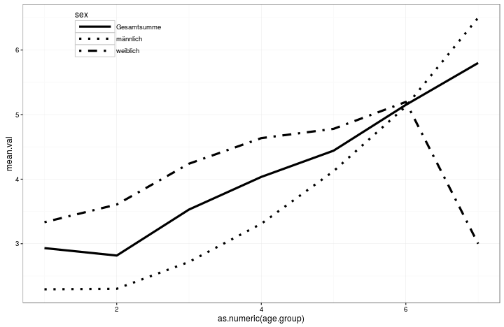
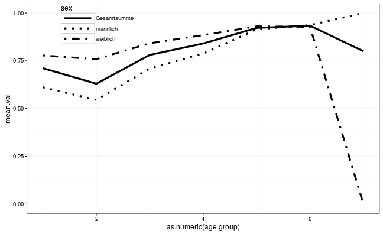
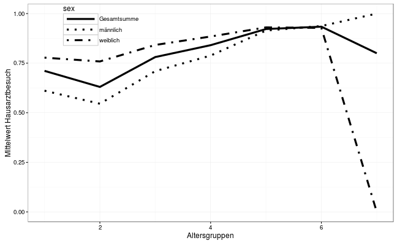
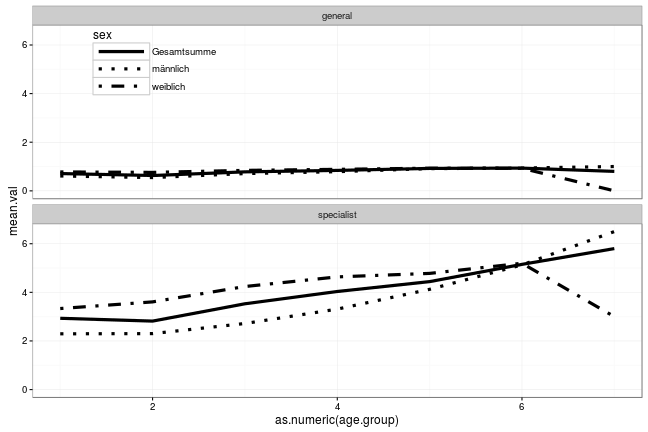

Session8
Back to last week's graph
last week's line graph
library("ggplot2")
load("../session8dta/aerzte.rdata")
p.fa <- ggplot(fa,aes(x = as.numeric(age.group),
y = mean.val,
linetype = sex)) +
scale_linetype_manual(values = c(1,3,4)) +
geom_line(size = 1.5) +
theme_bw() +
theme(
legend.position = c(0.2,0.9),
legend.key.width = unit(2,"cm"),
legend.background = element_blank()
)
last week's line graph
print(p.fa)

last week's line graph
- we had 5 columns: sex, age.group, mean, nobs, standard deviation
- the data were:
head(fa)
## # A tibble: 6 x 5
## sex age.group mean.val n.obs sd.val
## <chr> <ord> <dbl> <dbl> <dbl>
## 1 männlich 19 bis 29 2.294118 17 1.571810
## 2 männlich 29 bis 39 2.302326 43 1.406361
## 3 männlich 39 bis 49 2.718254 252 1.552528
## 4 männlich 49 bis 59 3.309859 284 2.040866
## 5 männlich 59 bis 69 4.123746 299 1.949377
## 6 männlich 69 bis 79 5.127451 204 1.973577
last week's line graph
- what if we have equally structured data
- e.g. general practitioner instead of specialist
head(ha)
## # A tibble: 6 x 5
## sex age.group mean.val n.obs sd.val
## <chr> <fctr> <dbl> <dbl> <dbl>
## 1 männlich 19 bis 29 0.6111111 18 0.5016313
## 2 männlich 29 bis 39 0.5454545 44 0.5036862
## 3 männlich 39 bis 49 0.7098039 255 0.4547453
## 4 männlich 49 bis 59 0.7881944 288 0.4092990
## 5 männlich 59 bis 69 0.9144737 304 0.2801244
## 6 männlich 69 bis 79 0.9371981 207 0.2431945
last week's line graph
- using the command
%+%you can interchange the data inside a graph
p.ha <- p.fa %+% ha
p.ha

last week's line graph
- you can still change the graph, e.g. the axis titles
p.ha + labs(x = "Altersgruppen",
y = "Mittelwert Hausarztbesuch")

last week's line graph
- another way to plot these two graphs effectively is to combine both data frame and use faceting
- therefore we add a variable to each of the two data frames indicating the kind of physician
- then we combine the two data frame using the command
rbind()(- the r stands for row) - afterwards we can use the new variable for faceting (
facet_wrap())
fa$physician <- "specialist"
ha$physician <- "general"
phys <- rbind(fa,ha)
last week's line graph
p.ha %+% phys + facet_wrap(~physician,nrow = 2)

last week's line graph
p.phy <- ggplot(phys,aes(x = as.numeric(age.group),
y = mean.val,
linetype = sex)) +
scale_linetype_manual(values = c(1,3,4)) +
geom_line(size = 1.5) +
facet_wrap(~physician,nrow =2) +
theme_bw() +
theme(
legend.position = c(0.2,0.9),
legend.key.width = unit(2,"cm"),
legend.background = element_blank()
)
last week's line graph
p.phy

Reshaping and summarising data
dplyr and reshape2
- are packages written by Hadley Wickham (like ggplot2)
- they contain lot of functions for data wrangling
- we will begin with simple summarising
- therefore we need the
group_by()adn thesummarise()function (dplyr)
dplyr and reshape2
- first we load the data from the file "kromeyer.rdata" - it is a
rdatafile - so we use theload()function - then we group the data frame by the
GRPcolumn (scientific group) and calculate the mean ofAGE
library(dplyr)
load("../session8dta/kromeyer.rdata")
kh %>% group_by(GRP) %>%
summarise(
mean.age = mean(AGE)
)
dplyr and reshape
kh %>% group_by(GRP) %>%
summarise(
mean.age = mean(AGE)
)
## # A tibble: 52 x 2
## GRP mean.age
## <chr> <dbl>
## 1 A2_01 1.021384
## 2 A2_02 2.045535
## 3 A2_03 3.020899
## 4 A2_04 4.029701
## 5 A2_05 5.001055
## 6 A2_06 5.999639
## 7 A2_07 6.981292
## 8 A2_08 8.005000
## 9 A2_09 9.007604
## 10 A2_10 10.016805
## # ... with 42 more rows
dplyr and reshape2
- we can calculate more than one summary statistic
kh.sum <- kh %>% group_by(GRP) %>%
summarise(
mean.age = mean(AGE),
sd.age = sd(AGE),
mean.bmi = mean(BMI_SDS,na.rm = T)
)
Exercise
- add the calculation of the mean and the standard deviation of
HEIGHT_SDSWEIGHT_SDSBMI_SDS
date and time
- there is a package
lubridate(also authored by HW) to handle date and time objects - we wanna use this package to extract the year and the month from the
EDATcolumn in the kh data set - so load (and if not already installed do so before) the package the type
kh$year <- year(kh$EDAT)
date and time
- you created a new column containing the year
head(kh)
## SIC sex gebdat EDAT GRP UID AGE AGE_REF
## 1 ID000001 male 1999-06-15 2011-01-21 07:00:00 B1_12 SA052 11.61 11.583
## 2 ID000001 male 1999-06-15 2011-12-06 07:22:01 B1_13 SA052 12.49 12.500
## 3 ID000002 female 2001-07-15 2011-01-11 07:00:00 B1_09 SA052 9.50 9.500
## 4 ID000002 female 2001-07-15 2011-12-12 07:34:59 B1_10 SA052 10.42 10.417
## 5 ID000003 female 2002-08-15 2011-01-12 07:15:00 B1_08 SA052 8.42 8.417
## 6 ID000004 female 2000-04-15 2011-01-12 07:00:00 B1_11 SA052 10.75 10.750
## HEIGHT_ORIG HEIGHT_SDS WEIGHT_ORIG WEIGHT_SDS BMI_ORIG BMI_SDS year
## 1 148.2 -0.152 69.50 2.323 31.644 2.646 2011
## 2 154.4 -0.098 72.65 2.071 30.475 2.452 2011
## 3 141.6 0.454 47.30 1.815 23.590 1.985 2011
## 4 145.3 0.250 51.60 1.730 24.441 1.969 2011
## 5 146.0 2.400 45.60 2.231 21.392 1.760 2011
## 6 140.9 -0.643 48.90 1.338 24.631 1.944 2011
date and time exercise
Create a column month containing the month from the EDAT column (the respective command is not surprisingly month())!
date and time solution
kh$month <- month(kh$EDAT)
Exercise
- Now use these two variables
monthandyearanddplyrfor counting the number of anthro measurements per month. - Create a new data frame containing the summarised information.
- Create a plot showing the months of the year on the x-axis and number of anthro entries on the y-axis; draw one line per year.
dplyr and reshape2
- another way to do the same is
library(reshape2)
kh %>% melt() %>% dcast(variable ~ sex, mean, na.rm = T)
dplyr and reshape2
kh %>% melt() %>% dcast(variable ~ sex, margins = "sex", mean, na.rm = T)